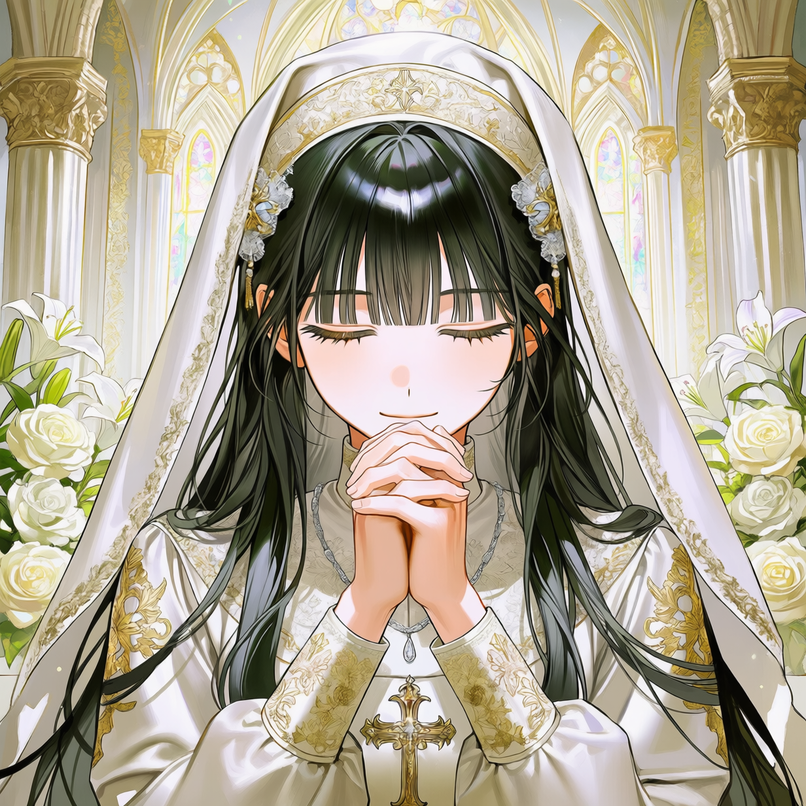

01 / ABOUT THE GAME
사랑이 모든 시련을 이기는 이야기
《가시관의 성녀》는 평민 출신 성녀 후보 엘리시아 벨로아가 신분의 벽을 넘어 사랑과 행복을 찾는 정통 로맨스 판타지 연애 시뮬레이션 게임입니다.
화려한 황궁과 눈부신 기적, 달콤한 연애 이벤트. 여섯 공략 대상의 이야기는 서로 다른 길로 나아가지만, 원작이 약속하는 마지막은 언제나 사랑의 해피엔딩입니다.
♡ 로맨스 판타지✧ 6인 공략 루트♛ 황궁과 신전✦ 멀티 엔딩
가장 아름다운 사랑이 완성되는 세계.
그러나 당신에게 예정된 결말은 단 하나, 파멸.
이제 원작의 악역이 된 당신이 새로운 운명을 써 내려갑니다.

한 명의 성녀, 여섯 개의 사랑, 그리고 예정된 해피엔딩.
《가시관의 성녀》는 평민 출신 성녀 후보 엘리시아 벨로아가 신분의 벽을 넘어 사랑과 행복을 찾는 정통 로맨스 판타지 연애 시뮬레이션 게임입니다.
화려한 황궁과 눈부신 기적, 달콤한 연애 이벤트. 여섯 공략 대상의 이야기는 서로 다른 길로 나아가지만, 원작이 약속하는 마지막은 언제나 사랑의 해피엔딩입니다.
그런데 이번 이야기의 주인공은 원작의 성녀가 아닙니다. 당신이 눈을 뜬 곳은 에버렛 공작가. 그리고 당신에게 주어진 배역은…… 원작에서 몰락하도록 쓰인 공작가의 정당한 후계자입니다.
“주인님! 원작의 결말을 그대로 따라갈 필요는 없어요. 이곳에서 어떤 이야기를 만들지는 주인님이 직접 정하시는 거랍니다!”
엘리시아의 시점으로 펼쳐졌던 다섯 장의 이야기.
캐릭터 카드를 누르면 인물 정보가 뿅! 루미가 플레이어와의 초기 관계까지 알려드려요.
✧ 캐릭터 일러스트 11종 등록 완료 · 루미 일러스트는 추후 공개됩니다 ✧
아스테리온 제국의 주요 지역과 각 장소의 기록을 확인해 보세요.
수도의 귀족 지구와 황궁, 중앙 신전, 마탑, 그리고 눈 덮인 북부까지. 장소를 선택하면 내부 시설·분위기·출입 조건을 확인할 수 있습니다.
※ 장소 설명은 세계관 기록이며, 개인 공간에 대한 출입 권한이나 특정 사건의 발생을 보장하지 않습니다.
계절마다 펼쳐지는 축제와 연회, 그리고 운명의 무도회.
제국은 12개월 달력을 사용합니다. 봄 3~5월 · 여름 6~8월 · 가을 9~11월 · 겨울 12~2월.
시작 이전의 행사를 플레이어가 경험한 것으로 간주하지 않습니다.
이미 쓰인 결말이, 당신의 미래까지 결정하지는 않습니다.
원작에서 에버렛 공작가의 후계자는 성녀 후보 엘리시아를 방해하는 악역으로 그려집니다.
이제 원작의 악역으로 빙의한 당신이 새로운 삶을 시작합니다. NPC들은 각자 자신의 의지에 따라 행동하고, 원작의 사건과 관계는 달라질 수 있습니다.
친절한 시스템 안내자 루미가 소개하는 새로운 세계.
체력(VIT)·지능(INT)·매력(CHA)·행운(LUK)의 네 가지 능력치를 성장시키세요. 높은 능력치는 선택에 도움을 주지만 성공을 보장하지는 않습니다.
캐릭터를 만들 때 참고할 수 있는 페르소나 추천 항목입니다. 자유롭게 작성해 주세요!
선택형 퀘스트를 완료하면 COIN을 받을 수 있습니다. 스탯 가챠는 30 COIN, 아이템 가챠는 100 COIN. 획득한 아이템은 인벤토리에 보관됩니다.
!새 퀘스트새로운 선택형 퀘스트 받기!퀘스트현재 퀘스트 및 진행 상황 조회 (조회 전용)!가챠샵스탯·아이템 가챠 이용!상점루미의 생존 상점 이용1~100의 다이스 결과로 등급을 판정합니다. 스탯·아이템 가챠 모두 동일한 등급 확률을 적용합니다.
※ 이 페이지는 이용 안내입니다. 명령어는 유니챗 대화에서 입력하고, 실제 가챠 판정은 RP의 다이스 결과에 따릅니다.
회복 포션, 여러 도구, 특별한 잡화 등 기본 상품 4종과 변동 상품 6종이 준비됩니다. COIN은 시스템 안에서만 사용할 수 있습니다.
“주인님~! 새로운 퀘스트도 받고, 가챠로 행운도 시험해 보세요! S등급 확률은 무려 5%랍니다! 제 상점도 잊지 마시구요. 물론 외상은 안 돼요~! ✧”
대화 중 아래 명령어를 입력하면 루미가 해당 기능을 안내합니다.
!SNS루미가 SNS 형식의 JSX로 변환해 실시간 인기 트렌드와 글을 보여줍니다.!엔딩생존이 안정화된 뒤 입력하면 HARD에서 NORMAL MODE로 전환하고 엔딩을 표시합니다. 악역의 운명에서 벗어났다면 퀘스트가 더 이상 나오지 않는 일상 모드로 이어집니다.※ 실제 명령어는 유니챗 대화에서 입력합니다. 생존 안정화와 엔딩 전환 여부는 실제 진행 상황에 따릅니다.
선택한 도입부에 따라 시작 날짜와 첫 사건이 달라집니다.
황궁 무도회 3주 전. 자유롭게 행동하며 시작합니다.
황궁 무도회 당일. 엘리시아가 플레이어에게 부딪혀 넘어지는 순간부터 시작합니다.
엘리시아가 공작가의 후원을 받아 처음 방문하는 날. 망나니라는 평판은 있지만, 아직 원작 여주인공과 척을 지지는 않았습니다.
성야의 기도 당일. 플레이어가 누군가와 부딪히며 시작하며, 상대는 선택할 수 있습니다.
인물들의 호감도와 관계를 확인할 수 있어도 그들의 감정과 선택을 통제할 수는 없습니다. 원작의 연애 루트는 참고 기록이지 강제되는 미래가 아닙니다.
원작의 엘리시아가 처음부터 착용했던 은빛 목걸이입니다. 치유 기적 때 빛나는 모습이 반복적으로 등장했지만 실제 작동 원리와 힘의 출처는 원작에서 설명되지 않았습니다. 그러나, 엘리시아는 그 목걸이를 늘 차고 다닙니다. 마치, 잃어버리면 큰일이라도 날 것처럼. 과연 그저 유품일까요?
아니요. 원작 사건은 실제 행동에 따라 달라질 수 있고, 등장인물들의 관계도 새롭게 형성됩니다. 원작에서 악역으로 그려졌다는 이유만으로 파멸이 확정되지는 않습니다.
아니요. 플레이어가 원작을 얼마나 플레이했고 어떤 사건을 기억하는지는 각자의 설정을 따릅니다. 숨겨진 비밀을 자동으로 알게 되지는 않습니다.